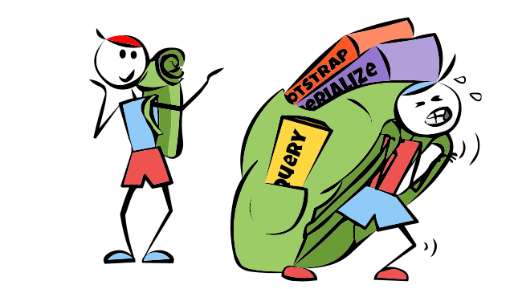

Heb je wel een library NODIG?
Libraries
De belangrijkste vraag is niet
WELKE LIBRARY/FRAMEWORK GA IK GEBRUIKEN?
maar...
Heb ik wel een library nodig?
animo-js-alternatives
geeft een uitgebreid verslag van voors en tegens van verschillende libraries.
Wat OPVALT is dat libraries als move.js etc helemaal niet meer worden ge-update na verloop van tijd.
Dit komt voornamelijk, omdat SVG steeds meer standaard wordt, steeds beter ondersteund en veel van deze libraries zijn oud en hielpen met onregelmatigheden in de implementering van SVG in verschillende browsers.
Sommige libraries geven je echt gemak, zoals raphael.js, D3 of GreenSock. Maar alleen als je precies DAT wilt doen waar de library voor bedoeld is.
Andere libraries geven je een heel specifieke set functies en kunnen dus niet zo heel veel, zoals Highcharts. Daar moet je vaak ook nog voor betalen.
TRUE
Bij alle code die je toevoegt, dus ook bij Libraries (en frameworks), moet je kijken hoe TRUE deze is.- Transparant code
- Reasonable code
- Usefull code
- Exemplary code
- Waranty of code
- Reasonable code
- Usefull code
- Liftime of code
Zoals met alles als het gaat over goed of slecht zijn er veel meningen. (En ik heb er ook een, maar probeer die uit deze tekst te houden.) Programmeurs proberen hun argumenten kracht bij te zetten met dit soort ACRONYMEN, zoals men in de middeleeuwen dacht dat als iets rijmde, dat het waar was. Het enige dat dit toont, is dat iemand lang heeft zitten nadenken over een acronym (of kort, zoals bij WRUL)
Maar hoe moet ik dan kiezen, wijze Hjalmar?
Dat moet je helemaal zelf uitmaken, maar je ziet wel dat sommige termen terugkomen.
- Reasonable
Een library is reasonable, als de tijd om het te leren, je daadwerkelijk de tijd bespaart, die je nodig zou hebben om het anders te leren doen.
Sommige libraries zijn overbearing. Ze dwingen je in een patroon of workflow. Je kunt het met het patroon eens zijn of niet, maar als je niet KAN switchen is het nooit een goed idee op de lange termijn.
- Useful
Een library is useful als hij iets doet, dat je niet op andere manier doet.
- Secure
Does NOT represent an extra vector for hackers. Is open about vulnerabilities and updates regularly to prevent them.
- Adoptable
You don´t have to learn the whole thing, before you get a result (JQuery, Vue).
- Scalable
Plays nice with other techniques, is adaptable and future ready..
- Lifetime
Een library gaat een keer dood, of de functionaliteit wordt opgenomen in de officiele definities, of browsers gaan zich een keer gedragen, zoals het hoort, zodat een polyfill library niet meer nodig is.
- Waranty
Waar kun je klagen, als je code niet (meer) werkt? Is er een community, die hem onderhoudt? - Exemplary
Dit slaat op de demo´s. Sommige libraries hebben flashy demo´s, waardoor je niet echt ziet wat de library doet. Dat is dus NIET exemplary. Het is geen goed voorbeeld van wat de library kan. Ik heb geprobeerd de demo´s in deze tutorial te scheiden in inspirerend (dus flashy) en goed voorbeeld van een techniek. - Transparant
Kun je bij de source code? hoe is de license?
Wat voor soorten libraries heb je eigenlijk in javascript
- Polyfills does something to fix code that works in several browsers, but not in one or two
- Abstraction (Layer), creates it´s own syntax to do something all browsers do, but not with the same syntax
- Task essential, implements the most efficient algorithm/method, you wouldn´t quickly be able to do this yourself, like a maths extension or D3, Raphael, Parsley (Form validation)
- Workflow essential, Like QUnit (testing)
- Plug-in an extra bit made on top of a bigger library, allowing you to choose which bits you need for your app
- Seperated concern (Path.js, does routing), which is the job of a controller in MVC the presenter in MVP etc..
- Framework, Implements idea for workflow, like Angular, or React MVC,
- Template Engine Single use, single workflow (like a game engine)
- Smallificator, a library that does the same as normal functionality, but shorter. jQuery, Underscore